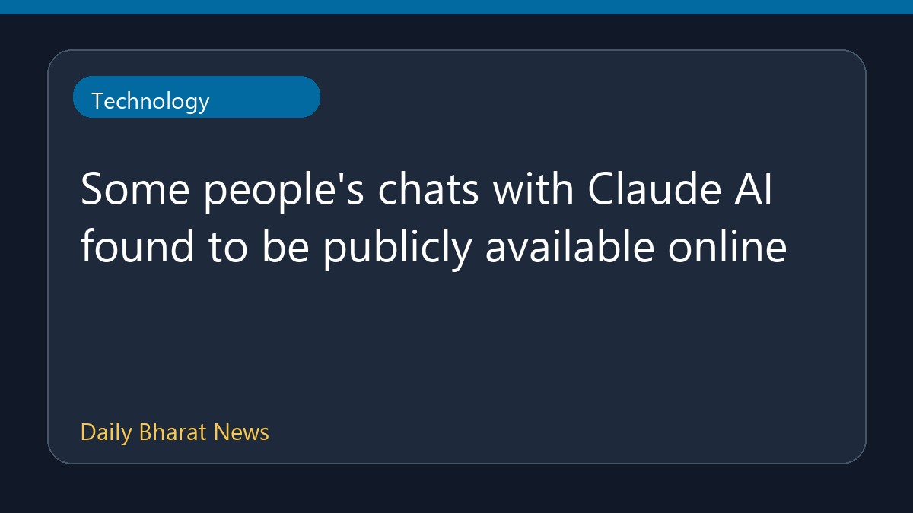

क्लॉथ एआई के कुछ यूजर्स की चैट ऑनलाइन सार्वजनिक मिलीं

हाल ही में मिली जानकारी के अनुसार, एंथ्रोपिक के चैटबॉट क्लॉथ एआई के साथ हुई सैकड़ों बातचीत ऑनलाइन सार्वजनिक रूप से उपलब्ध पाई गई हैं। इस तकनीकी घटना के तहत यूजर्स की चैट के खुलासे से जुड़ी सीमित जानकारियाँ सामने आई हैं, जो सुरक्षा और गोपनीयता पर सवाल खड़े करती हैं। इस मामले में अभी और अधिक तथ्यों और विवरणों का इंतजार किया जा रहा है, क्योंकि उपलब्ध सूचनाएं फिलहाल काफी सीमित हैं।
मूल स्रोत: BBC Technology
Some people's chats with Claude AI found to be publicly available online ↗
Some people's chats with Claude AI found to be publicly available online ↗